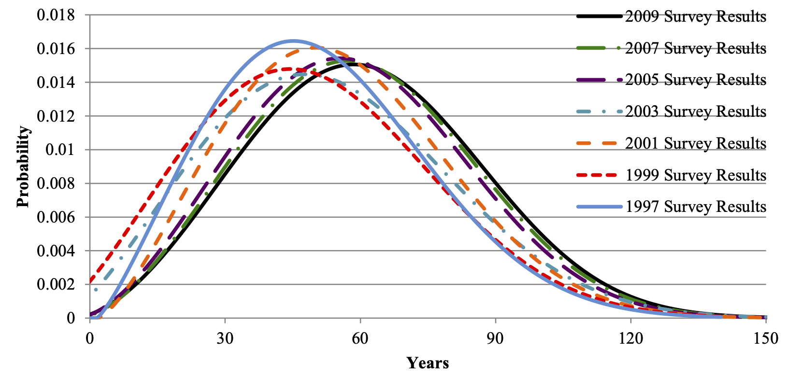

devoirs3::devoirs_selection(
label = "argumentation-1-one",
question = "Only one of the following is a valid description of argumentation. Mark that one.",
answers = argumentation_1_one_choices,
multiple = FALSE
)()Quantitative Argumentation
Chapter 1 Exercises
Exercise 1 Many people experience the symptoms of a housing shortage: splitting up apartments to accomodate roommate groups; financial stress due (in part) to high rents; deferring life decisions such as having children; living in deteriorating, aging buildings, and so on.
We’re used to thinking about people in terms of lifespan, but it is also useful to think about buildings that way. City and local governments keep detailed information about the housing stock, largely for tax purposes. Services like <zillow.com> have data readily available to the public.
Question: What about the houses listed on Zillow might presented a view biased to houses in better condition?
A life-cycle assessment of a sample of US houses and apartments by Aktas and Bilic (2012) produced the following graphic about how long houses and apartments remain habitable.

Question: Is the graph consistent with the claim that 7% of US housing stock was built before 1920?
Question: Speculate on what might account for the rightward shift of the curve over the ten year period considered. Consider these two hypotheses:
- house building techniques have been improving. (When would they have had to improve to produce the curve shift?)
- the current housing shortage has resulted in buildings being used after the time that they would have been replaced were there no housing shortage?
Exercise 2
- Identify some models around you. Explain what real-world object they represent, what operations they make convenient, and what features, properties, or uses of the real-world object they do not capture. State what you think may have been the purpose of constructing that model.
- A schedule is a model. Explain what operations/re-configurations a schedule makes it easy to do.
- A commonly heard criticism of a model is that it is too simple. But simplicity is also a virtue, so the too-simple critique ought always to come with a statement about what essential feature the model is leaving out. As best you can, describe one or two elements of a real-world epidemic that the SIR model leaves out and that you suspect might change the conclusions drawn from the model.
NoteKey vocabulary
Only one of the following is a valid description of argumentation. Mark that one.
Only one of the following is a valid description of formal reasoning. Mark that one.
devoirs3::devoirs_selection(
label = "formal-reasoning-1-one",
question = "Only one of the following is a valid description of formal reasoning. Mark that one.",
answers = formal_reasoning_1_one_choices,
multiple = FALSE
)()Only one of the following is a valid description of givens. Mark that one.
devoirs3::devoirs_selection(
label = "givens-1-one",
question = "Only one of the following is a valid description of givens. Mark that one.",
answers = givens_1_one_choices,
multiple = FALSE
)()Only one of the following is a valid description of heuristic reasoning. Mark that one.
devoirs3::devoirs_selection(
label = "heuristic-reasoning-1-one",
question = "Only one of the following is a valid description of heuristic reasoning. Mark that one.",
answers = heuristic_reasoning_1_one_choices,
multiple = FALSE
)()Only one of the following is a valid description of Large language model (LLM). Mark that one.
devoirs3::devoirs_selection(
label = "large-language-model-llm-1-one",
question = "Only one of the following is a valid description of Large language model (LLM). Mark that one.",
answers = large_language_model_llm_1_one_choices,
multiple = FALSE
)()Only one of the following is a valid description of models. Mark that one.
devoirs3::devoirs_selection(
label = "models-1-one",
question = "Only one of the following is a valid description of models. Mark that one.",
answers = models_1_one_choices,
multiple = FALSE
)()Only one of the following is a valid description of quantitative models. Mark that one.
devoirs3::devoirs_selection(
label = "quantitative-models-1-one",
question = "Only one of the following is a valid description of quantitative models. Mark that one.",
answers = quantitative_models_1_one_choices,
multiple = FALSE
)()Only one of the following is a valid description of SIR model. Mark that one.
devoirs3::devoirs_selection(
label = "sir-model-1-one",
question = "Only one of the following is a valid description of SIR model. Mark that one.",
answers = sir_model_1_one_choices,
multiple = FALSE
)()